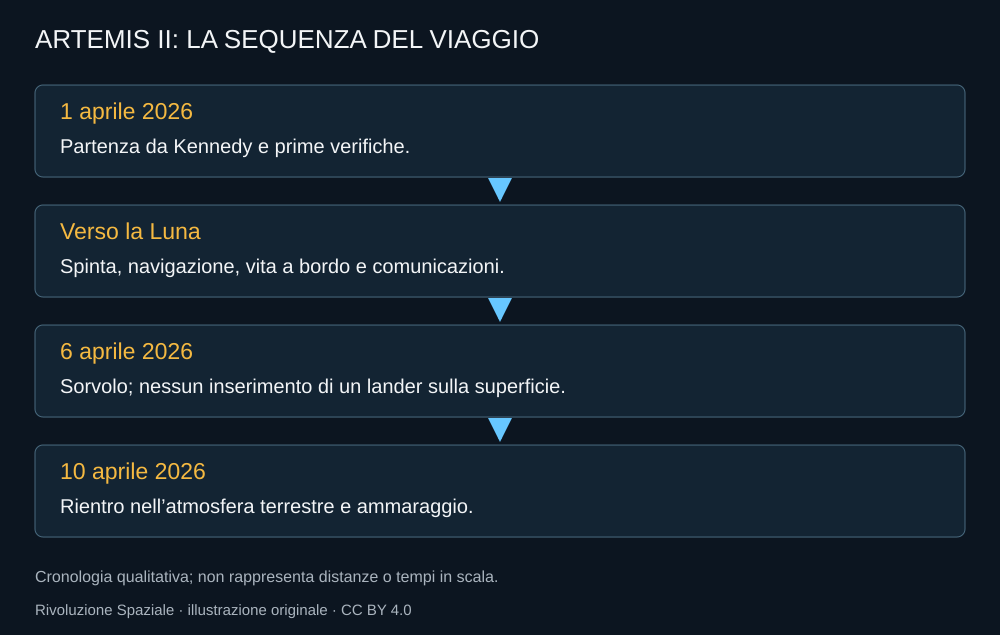
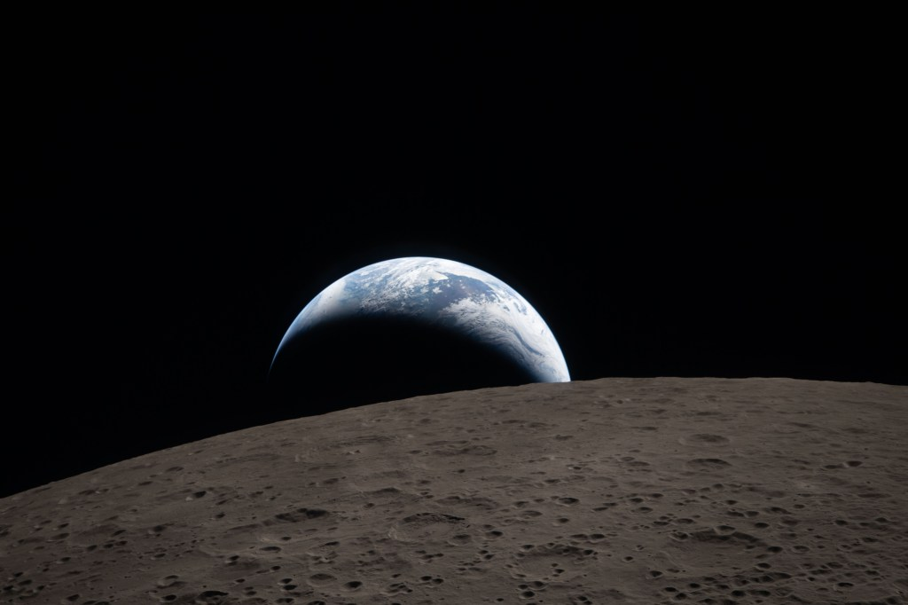

Il primo aprile 2026 Artemis II parte da Kennedy. Per la prima volta dopo l’epoca Apollo, un equipaggio umano intraprende un viaggio attorno alla Luna. Non deve allunare: deve verificare Orion con persone a bordo lungo una missione che comprende le condizioni del viaggio lunare e il ritorno terrestre.

Prima la nave, poi la distanza
La partenza non cancella la necessità di controllare la capsula. La missione deve verificare i sistemi umani e le operazioni prima e durante il trasferimento verso la Luna. Energia, comunicazioni, risorse e navigazione restano lavori continui, non una lista compilata una volta sola.
Per il pubblico il viaggio ha una forma semplice: andare, passare dietro la Luna, tornare. Per l’equipaggio ogni tratto contiene compiti, verifiche e decisioni. La grande emozione della destinazione non sostituisce la routine; è resa possibile dalla routine eseguita bene.

Il sorvolo
Il passaggio del 6 aprile consente osservazioni e immagini della superficie. NASA documenta una distanza massima dalla Terra di 252.756 miglia e un avvicinamento alla superficie lunare di 4.067 miglia. Sono grandezze diverse: un record di lontananza dalla Terra non indica un passaggio rasente sul terreno.

La Terra che scompare dietro il bordo lunare offre una delle immagini più potenti della missione. Non racconta una base già costruita e non prova che l’allunaggio sia pronto. Racconta qualcosa che era mancato per decenni: persone in viaggio abbastanza lontano da osservare quella geometria con i propri occhi.
La strada verso casa
Il ritorno conclude la verifica più delicata. La capsula deve arrivare nell’atmosfera con le condizioni previste, frenare e consentire il recupero. Il 10 aprile l’equipaggio ammara nel Pacifico; il giorno successivo torna a Houston, dove incontra le famiglie.
Il momento dell’arrivo ha un’emozione diversa dal lancio. La partenza contiene una promessa; il recupero restituisce le persone. La missione può essere analizzata senza che ogni discussione rimanga sospesa sopra un equipaggio ancora lontano.
Riepilogo NASA della missione conclusa il 10 aprile 2026. Apri il video.
Quello che il volo lascia
Orion ha ora una missione umana lunare da confrontare con le prove precedenti. Gli apparati vengono analizzati insieme alle osservazioni dell’equipaggio. Il percorso successivo può usare dati reali su vita a bordo, operazioni e ritorno.
Artemis II non verifica la discesa di un lander o il lavoro in una tuta lunare. La sua importanza non ha bisogno di includere risultati che non le appartengono. È la prova del viaggio umano e un nuovo punto di partenza per la catena che dovrà scendere sulla superficie.
Fonti pubbliche e tracce
- NASA, Artemis II. Equipaggio e missione conclusa nell’aprile 2026.
- NASA, equipaggio di nuovo a Houston, 11 aprile 2026. Ritorno dell’equipaggio e distanze del sorvolo.
- NASA, Artemis II: Image and Video Recap. Fotografie documentarie: crediti distinti per ciascuna immagine.